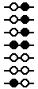
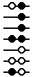

| CpGサイトのチェック |


| CpGサイトのメチル化を判定する際に、バイサルファイト配列側のサイトをチェックするように指定できます。 反復配列などについてのバイサルファイトシークエンシングで使用するオプションです。 | ||
| 反復配列のバイサルファイトシークエンシングでは、マルチローカス由来のため、リファレンスとするゲノム配列と個々のバイサルファイトシークエンスで、ゲノム配列そのものが異なっている場合があります。 この様な場合に、このオプションにチェックを入れると、バイサルファイト配列についてもCpGサイトであるかどうかの確認を行います。 | ||
| たとえば、10番目の塩基がGとAの場合があるような以下の例では、このオプションを使用すると、10番目の塩基がGの場合のみ、このCpGサイトについてのメチル化の判定を行います。 | ||
|
1 10 Genomic ATGCAATTCGCCTCGAACAT Bisulfite1 ATGTAATTTGTTTCGAATAT Bisulfite2 ATGTAATTTATTTCGAATAT Bisulfite3 ATGTAATTTATTTCGAATAT Bisulfite4 ATGTAATTCGTTTCGAATAT Bisulfite5 ATGTAATTTATTTTGAATAT Bisulfite6 ATGTAATTTGTTTTGAATAT Bisulfite7 ATGTAATTCGTTTTGAATAT |
デフォルト  |
オプション使用  |
| 一般的に、バイサルファイト配列はバイサルファイトによる化学処理とPCRによる増幅をおこなっているため、ゲノム配列と比較して配列の信頼性がかなり低くなります。 そこで、QUMAでは入力されたゲノム配列を信用するというスタンスをとっています。 そのため、上例のようにCpGサイトのGが、バイサルファイト配列で異なる塩基として検出された場合でも、デフォルトではCpGサイトとして扱っています。 シングルローカスについてのバイサルファイトシークエンシングでは、デフォルトの設定の方が正しい結果を得られると思われます。 | ||